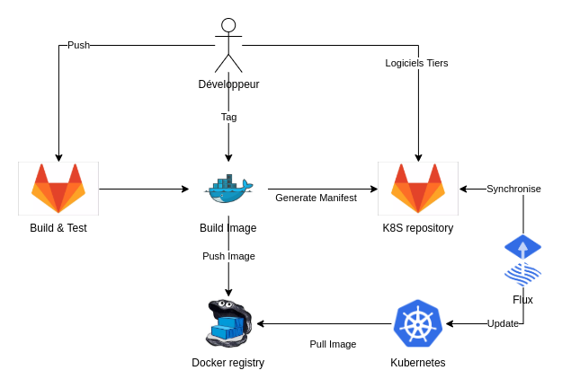

L'usine logicielle de l'UNC


L'usine logicielle de l'UNC
Par Arnaud Brunet
Qui est Arnaud Brunet ?
- Ingénieur d'études en déploiement, développement et administration d’applications de gestion
- à la DNSI de l'UNC (arnaud.brunet@unc.nc)
- Meetups:
- Association Logiciels Libres (apull.asso.nc)
- Site Internet (gronono.fr)
Organisation de la DNSI
- Trois pôles
- Assistance 911@unc.nc
- Système et réseau
- Infogestion dsi-infogestion@unc.nc
- Carte Sup' : cartesup@unc.nc
- Questions pédagogies : SP ou RP
Usine logicielle ?
Repose sur 4 pilliers :
- Git & Gitlab
- Gitlab-CI
- Docker
- Kubernetes
La porte d'entrée : Git & Gitlab
- Travail en équipe
- Historique
- Source de vérité
L'automate : Gitlab-CI
- Découpage en étapes : les stages
- Scripting à chaque stages
- Chaque stage s'execute dans un environnement cloisonné
Le cloisonnement : Docker
- Recette de création d'un environnement : les images
- Chaque environnement (container) est isolé de l'hôte
Le chef d'orchestre : Kubernetes
- Gère les containers sur plusieurs serveurs
- Paradigme déclaratif (yaml)
Le petit dernier : Flux
- Déclaration du cluster dans GIT
- Synchro Git / K8S
Le nouveau né : Prometheus
- Système de monitoring
- Système d'alertes
Les avantages de l'usine
- Lien entre l'application déployée et le code source
- Le code déployé passe les tests automatisés
- Les environnements de compilation et d'execution sont auto-documentés
- Si l'application plante, elle est automatiquement relancée
- Si un serveur plante, l'application est migrée sur un autre serveur
- Monitoring / système d'alertes
Le workflow de l'usine
Demonstration
- Modification d'un projet simple
- Configuration locale vs configuration déployée
- Sur le push : compilation + déploiement en intégration
- Sur un tag : création d'une release
- Action manuelle : déploiement en test
- Plantage de l'application
- Monitoring
Kubernetes en production
- en place depuis juin 2019
- montée en compétences progressives
- 15 applications dont 6 métiers
- réparties sur 3 noeuds
- un peu moins 40 Go de données
L'avenir
- Intégration des applications Cocktail
- Intégration des applications PHP : ENT, Moddle, GroupeNotes, ...
- Meilleur solution de stockage basée sur VMWare
Questions ?
Merci
- https://github.com/unc-dsi/presentation-usine-logicielle
- arnaud.brunet@unc.nc